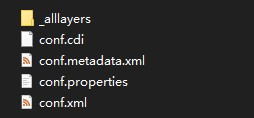

一、部署环境和软件版本
操作系统 版本 win10
JDK 版本 OpenJDK11U-jdk_x64_windows_hotspot_11.0.16.1_1
GeoServer 版本 2.21.1
GeoWebCache 版本 1.21.1
二、说明
- 安装 JDK，配置 java 环境。
- Windows 平台可安装 GeoServer Exe 安装包。
- 也可以通过 Tomcat 起动服务，需要下载 GeoServer 和 GeoWebCache 的 war 包，并放到 tomcat/webapps 目录下，如果只是发布切片服务，配置 GeoWebCache 即可。
三、软件下载
- 下载 GeoServer
- 也可GeoServer 官网下载
- 下载 GeoWebCache，解压待用
四、配置 GeoServer
- 将 GeoWebCache 中的 jar 包
\geowebcache\WEB-INF\lib\gwc-arcgiscache-1.21.1.jar拷贝到 GeoServer 安装目录\webapps\geoserver\WEB-INF\lib。 - 解压 GeoServer 安装目录下的 jar 包
\webapps\geoserver\WEB-INF\lib\gs-gwc-2.21.1.jar到gs-gwc-2.21.1文件夹，将 GeoWebCache 中的\geowebcache\WEB-INF\geowebcache-arcgiscache-context.xml文件拷贝到解压的目录gs-gwc-2.21.1文件夹下。 - 修改
gs-gwc-2.21.1文件夹下的geowebcache-core-context.xml文件，添加以下代码：
<bean id="gwcArcGIGridsetConfigutation" class="org.geowebcache.arcgis.layer.ArcGISCacheGridsetConfiguration"/> - 修改
gs-gwc-2.21.1文件夹下的geowebcache-servlet.xml文件，添加以下代码：
<import resource="geowebcache-arcgiscache-context.xml"/> - 将
gs-gwc-2.21.1文件夹打成 jar 包，替换 GeoServer 安装目录下的 jar 包\webapps\geoserver\WEB-INF\lib\gs-gwc-2.21.1.jar，完成修改。 - 参考：将文件夹打包成.jar文件 打包，打 jar 包命令：
jar -cvfm gs-gwc-2.21.1.jar gs-gwc-2.21.1/META-INF/MANIFEST.MF -C gs-gwc-2.21.1/ .
五、ArcGIS 切片数据
COMPACT（bundle） 格式或 EXPLODED（jpeg、png） 的切片数据均可，参考ArcGIS Desktop 制作影像切片

六、切片数据配置
- 打开
\GeoServer\gwc\geowebcache.xml文件，在layers节点下添加arcgisLayer节点。
<arcgisLayer>
<name>test</name>
<tilingScheme>E:\\data\\arcgiscache\\cachedata\\test\\conf.xml</tilingScheme>
<tileCachePath>E:\\data\\arcgiscache\\cachedata\\test\\_alllayers</tileCachePath>
<hexZoom>false</hexZoom>
</arcgisLayer>
- 重启 GeoServer 服务，在 切片图层 里就能看到配置的 ArcGIS 切片服务了

参考：